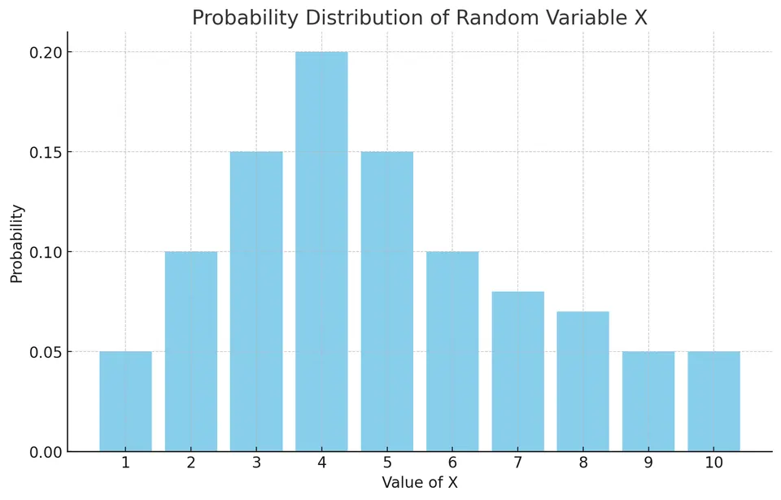
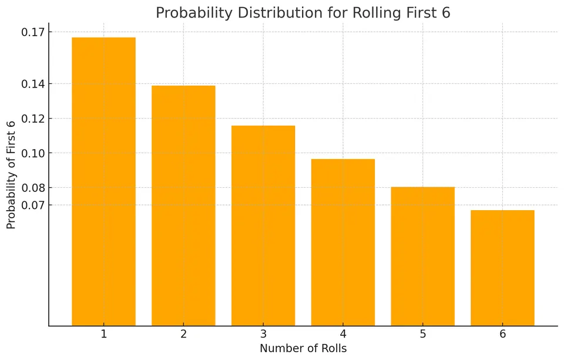
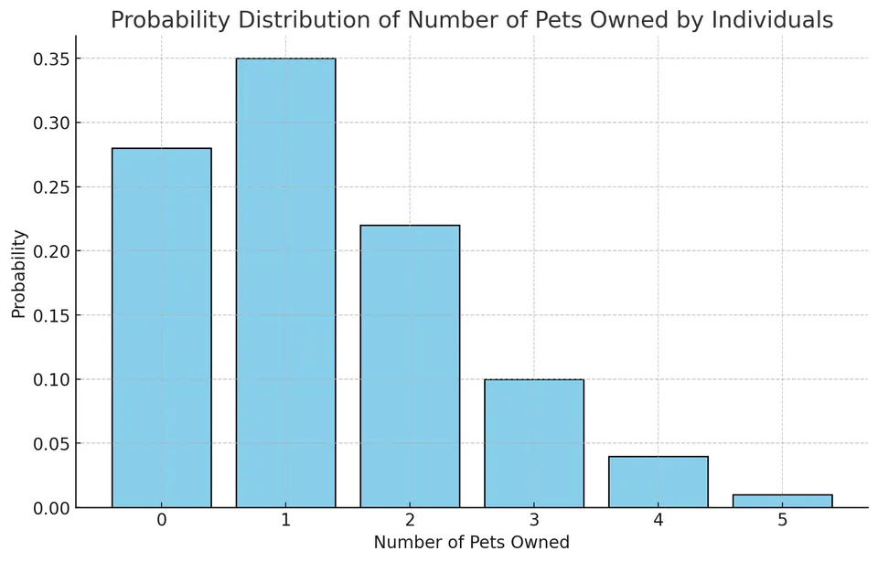
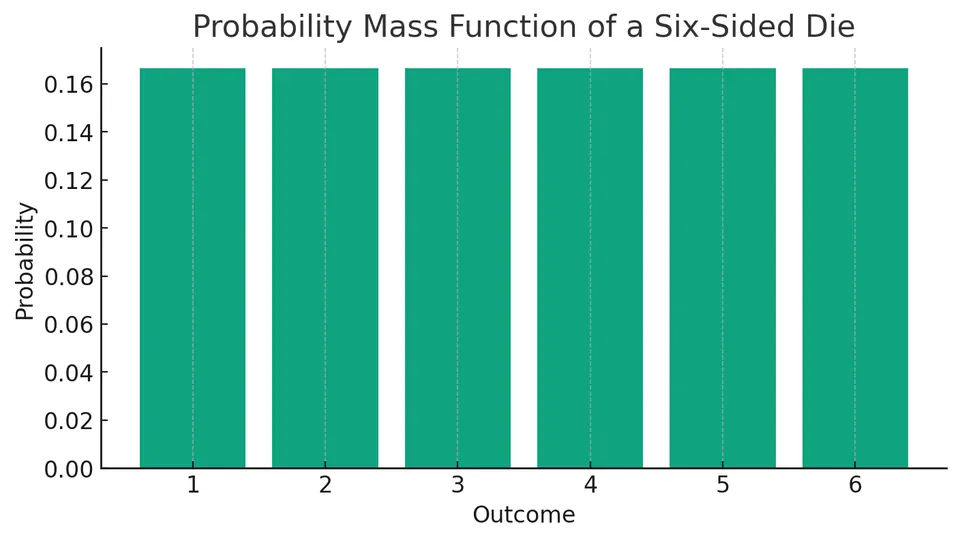
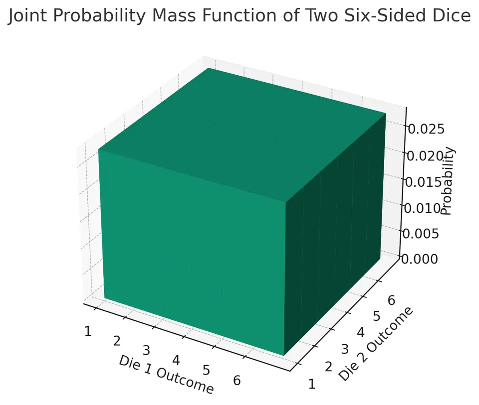
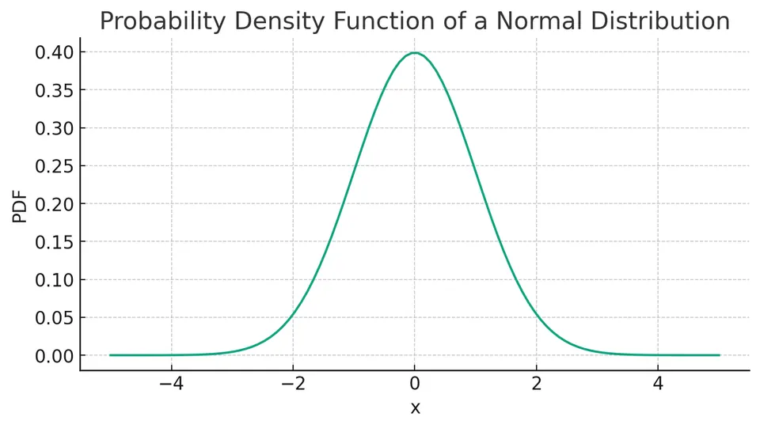
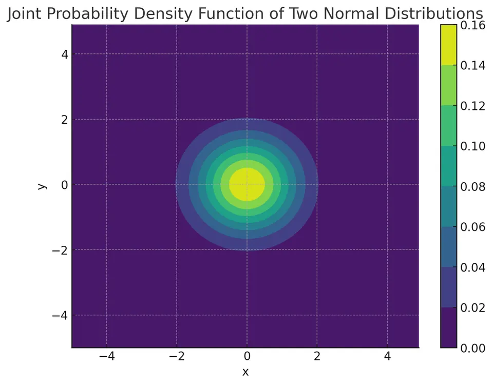
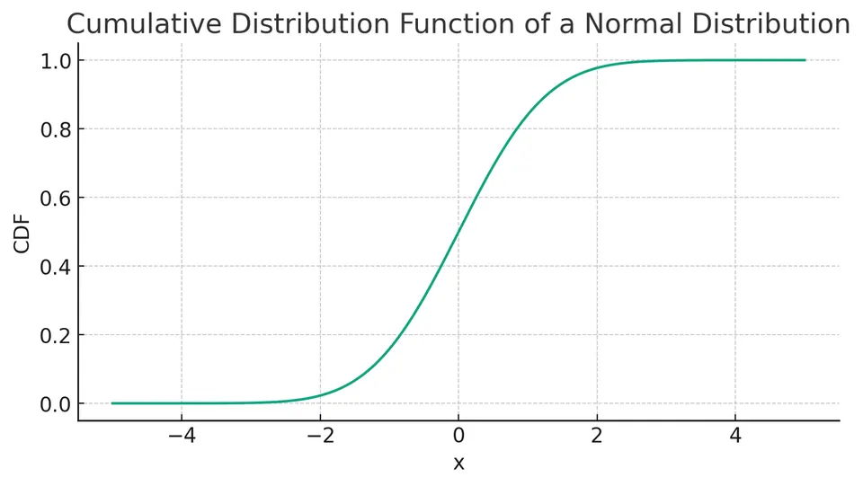
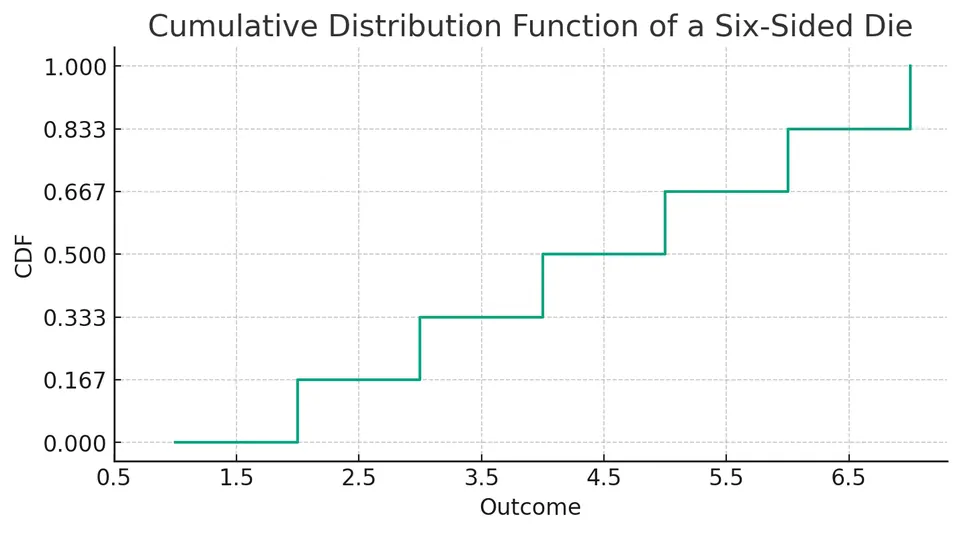

Introduction to Distributions
A probability distribution assigns probabilities to the possible values of a random quantity and to events involving those values. It describes a model for what could happen, rather than merely listing the values already observed. A dataset is one realization of that model; its relative frequencies need not equal the population probabilities exactly.
The first task is to define the quantity. “Draw a card” describes an experiment, while “count whether the card is a heart” defines a numerical outcome. Once the random variable is clear, its support tells us which values are possible, and its distribution tells us how probability is allocated among them.
Random variables and recorded values
A real-valued random variable is a function that assigns a number to each outcome of an experiment. An uppercase letter such as $X$ denotes the random variable, while a lowercase $x$ denotes a particular value or threshold. Thus $P(X\le x)$ is a probability about the random outcome relative to a fixed number.
The underlying observation may be categorical, but a numerical random variable requires a stated coding. For a fair draw from a standard deck:
- Suit: code hearts, diamonds, clubs, and spades as $1,2,3,4$. The suit variable is discrete, and the probability of code 1 is $13/52=1/4$.
- Rank: assign ace the value 1, numbered cards their number, and jack, queen, and king the values 11, 12, and 13. State this convention because other games assign different numerical values to the same ranks.
- Color: use an indicator $C=1$ for red and $C=0$ for black. Then $P(C=1)=1/2$.
Changing suit codes changes their arithmetic mean without changing the cards. The numerical coding therefore does not automatically give arithmetic operations a substantive meaning. An indicator mean does have a clear interpretation: it is the probability of the indicated event.
For weather, temperature and wind speed are commonly modeled as continuous measurements. An event such as $P(T>20)$ must specify the temperature units, for example degrees Celsius. Rainfall amount needs an additional distinction: a day can have exactly zero rainfall, while positive amounts can vary continuously. A model with a point mass at zero and a continuous positive component is mixed, showing why not every distribution fits only the discrete-or-continuous alternatives.
Support, mass, and density
A discrete variable has a finite or countably infinite set of possible values. Its probability mass function gives the point probabilities:
$$ p_X(x)=P(X=x),\qquad p_X(x)\ge0,\qquad \sum_xp_X(x)=1. $$
For an event, add the masses of the values that satisfy it. In a count model, $X<3$ and $X\le3$ can differ because $P(X=3)$ can be positive.
The continuous families in these notes have probability density functions. Their probabilities are areas:
$$ P(a\le X\le b)=\int_a^b f_X(x)\,dx,\qquad P(X=x)=0. $$
A density is nonnegative and has total integral 1. It is not bounded above by 1: a uniform distribution on $[0,0.5]$ has density 2 and total area $2(0.5)=1$. Density height has inverse measurement units; integrating it over an interval produces a dimensionless probability. For these continuous models, including or excluding a single endpoint changes no probability.
One CDF for every type of distribution
The cumulative distribution function is defined for discrete, continuous, and mixed variables:
$$ F_X(x)=P(X\le x). $$
It is nondecreasing, approaches 0 as $x\to-\infty$, and approaches 1 as $x\to\infty$. It is also right-continuous: approaching a threshold from above retains the mass already included at the threshold.
The CDF gives interval probabilities without requiring a new rule for each distribution type:
$$ P(a<X\le b)=F_X(b)-F_X(a). $$
The subtraction excludes any mass at $a$, since it subtracts all probability through $a$. To include $a$, subtract the left limit $F_X(a^-)=P(X<a)$ instead. A CDF jump at $a$ has size $F_X(a)-F_X(a^-)=P(X=a)$. For a density model, there are no point-mass jumps, and the density is the CDF derivative where that derivative applies.
Example: a finite discrete distribution
Consider this distribution on the integers 1 through 10:
| Value of $X$ | Probability $p_X(x)$ |
|---|---|
| 1 | 0.05 |
| 2 | 0.10 |
| 3 | 0.15 |
| 4 | 0.20 |
| 5 | 0.15 |
| 6 | 0.10 |
| 7 | 0.08 |
| 8 | 0.07 |
| 9 | 0.05 |
| 10 | 0.05 |
Every probability is nonnegative, and their sum is 1, so this is a valid complete PMF. The most probable value is 4, with probability 0.20; it is four times as likely as the value 10, whose probability is 0.05. The most probable value is called a mode, which is a different summary from the expected value.

Each bar describes one possible outcome. Adding a set of bars calculates an event probability. Their heights are already probabilities, so no interval width is required as it would be for a density.
Example: rolling until the first 6
Roll a fair six-sided die independently until the first 6. Let $X$ be the number of rolls, including the successful roll. For $X=k$, the first $k-1$ rolls must fail and roll $k$ must be a 6:
$$ P(X=k)=\left(\frac56\right)^{k-1}\frac16,\qquad k=1,2,\ldots. $$
The first six entries are
| Number of rolls | Probability |
|---|---|
| 1 | $1/6\approx0.1667$ |
| 2 | $(5/6)(1/6)\approx0.1389$ |
| 3 | $(5/6)^2(1/6)\approx0.1157$ |
| 4 | $(5/6)^3(1/6)\approx0.0964$ |
| 5 | $(5/6)^4(1/6)\approx0.0803$ |
| 6 | $(5/6)^5(1/6)\approx0.0670$ |
This table is only the beginning of an infinite support. Its six entries do not sum to 1 because waiting beyond six rolls remains possible; that remaining probability is $(5/6)^6\approx0.3349$.

Translate each question into an event before adding probabilities:
- On the third roll: $P(X=3)=(5/6)^2(1/6)\approx0.1157$.
- On the third or fourth roll: the two events are disjoint, so $P(X=3\text{ or }X=4)=P(X=3)+P(X=4)\approx0.2122$.
- In fewer than five rolls: sum counts 1 through 4, or use $P(X<5)=1-(5/6)^4\approx0.5177$.
- In no more than three rolls: include the endpoint 3, giving $P(X\le3)=1-(5/6)^3\approx0.4213$.
- After three rolls: all three initial rolls must fail, giving $P(X>3)=(5/6)^3\approx0.5787$.
- In at least three rolls: only the first two rolls must fail, giving $P(X\ge3)=(5/6)^2\approx0.6944$.
The difference between the last two probabilities is $P(X=3)$. Carry extra digits through calculations and round at the end: adding rounded PMF entries can give a different last digit from the exact sum.
Example: number of pets
Let $N$ count the pets owned by an individual selected from the modeled population:
| $N$ | $P(N)$ |
|---|---|
| 0 | 0.28 |
| 1 | 0.35 |
| 2 | 0.22 |
| 3 | 0.10 |
| 4 | 0.04 |
| 5 | 0.01 |

The table describes a complete model with no probability beyond five pets. Its values need not describe every population; they are the assumed probabilities for this example.
| Question | Calculation | Probability |
|---|---|---|
| Fewer than 2 pets | $P(N=0)+P(N=1)=0.28+0.35$ | 0.63 |
| More than 3 pets | $P(N=4)+P(N=5)=0.04+0.01$ | 0.05 |
| 1 or 4 pets | $P(N=1)+P(N=4)=0.35+0.04$ | 0.39 |
| At most 3 pets | $0.28+0.35+0.22+0.10$ | 0.95 |
| 2 or fewer, or more than 4 | $(0.28+0.35+0.22)+0.01$ | 0.86 |
All additions combine disjoint possible counts. Here $F_N(2)=0.85$, but the left limit at 2 is 0.63. Their difference, 0.22, is the probability of exactly two pets and illustrates a discrete CDF jump.
Expected value as a weighted average
For a discrete variable, multiply each possible value by its probability and add:
$$ E[X]=\sum_i x_iP(X=x_i). $$
For a density model, the analogous operation is
$$ E[X]=\int_{-\infty}^{\infty}x f_X(x)\,dx. $$
These ordinary finite expectations require the absolute first moment to be finite. The mean summarizes location, but does not determine the mode, tail probabilities, or spread. Repeating independent copies of an integrable variable links the mean to the long-run average through the law of large numbers.
For one fair die roll, the weights and contributions are
| Outcome $X$ | Probability | Contribution to the mean |
|---|---|---|
| 1 | $1/6$ | $1(1/6)$ |
| 2 | $1/6$ | $2(1/6)$ |
| 3 | $1/6$ | $3(1/6)$ |
| 4 | $1/6$ | $4(1/6)$ |
| 5 | $1/6$ | $5(1/6)$ |
| 6 | $1/6$ | $6(1/6)$ |
Adding the six contributions gives
$$ E[X]=(1\times\tfrac16)+(2\times\tfrac16)+(3\times\tfrac16) +(4\times\tfrac16)+(5\times\tfrac16)+(6\times\tfrac16) =\frac{1+2+3+4+5+6}{6}=\frac{21}{6}=3.5. $$
The die can never show 3.5. The expectation describes the average across repeated rolls, not a new possible outcome or the value predicted to appear most often on one roll.
Joint distributions: recording two quantities together
A joint distribution describes two variables from the same experiment. For discrete variables,
$$ p_{X,Y}(x,y)=P(X=x,Y=y). $$
The masses are nonnegative and sum to 1 over the possible pairs. To obtain the marginal probability of $X=x$, sum the joint masses over all allowed values of $Y$. A pair's probability is not generally the product of the two marginal probabilities; that factorization requires independence.


For two variables with a joint density $f_{X,Y}(x,y)$, integrate over a region to obtain its probability. A density height at a single pair is not the probability of that pair. Nonnegativity and a total double integral of 1 play the same normalization role as the sum of joint masses.


The joint CDF works in either case:
$$ F(a,b)=P(X\le a,Y\le b). $$
It accumulates probability in the region below both thresholds. Letting the second threshold include its entire range leaves the marginal CDF of the first variable:
$$ F_X(a)=\lim_{b\to\infty}F(a,b). $$


Relating a probability model to data
A theoretical PMF, density, or CDF specifies probabilities for possible outcomes. An empirical distribution assigns relative frequencies to the values in a particular sample. Differences between the two can reflect ordinary sampling variation, an inappropriate family, a changing population, or dependence between observations. Check the support and the observation mechanism before choosing a familiar curve, and use the fitted model to calculate the event actually asked about rather than treating a density plot as a list of point probabilities.
Practice: Exercises with worked solutions